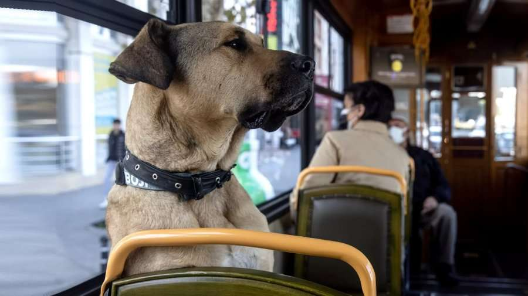

| Aktuale | Lajmet ditore |
|
|
Boji - qeni nga Stambolli që po merret me politikë (pa vullnetin e tij) Një histori gati e pabesueshme nga bota reale turke.
Boji është një yll.
Boji i ka ka gati 128 mijë ndjekës në Twitter.
Boji është i njohur.
Boji është figurë prominente e jetës publike.
Boji është një qen.
Një qen nga Stambolli. |
WhatsAppi ndryshon politikat e privatësisë pas gjobës rekordWhatsAppi po rishkruan politikën e tij të privatësisë si rezultat i një gjobe të madhe për mbrojtjen e të dhënave në fillim të këtij viti. Pas një hetimi, mbikëqyrësi irlandez i mbrojtjes së të dhënave lëshoi një gjobë prej 225 milionë eurove - e dyta më e madhe në histori mbi GDPR - dhe urdhëroi WhatsAppin të ndryshojë politikat e saj. WhatsApp apeloi kundër gjobës, por edhe ndryshoi dokumentet e saj të politikave në Evropë dhe në Britani. Megjithatë, ajo këmbëngul se asgjë në lidhje me shërbimin e saj aktual nuk po ndryshon. Në vend të kësaj, ndryshimet janë krijuar për të "shtuar detaje shtesë rreth praktikave tona ekzistuese" dhe do të shfaqen vetëm në versionin evropian të politikës së privatësisë, i cili tashmë është i ndryshëm nga versioni që zbatohet në pjesën tjetër të botës. “Nuk ka asnjë ndryshim në proceset tona apo marrëveshjet kontraktuale me përdoruesit dhe përdoruesve nuk do t'u kërkohet të bien dakord për asgjë ose të ndërmarrin ndonjë veprim për të vazhduar përdorimin e WhatsApp”, tha kompania, duke njoftuar ndryshimin. Politika e re hyn në fuqi menjëherë. |
|
Free Friday zbritja me e madhe e vitit ne ETC !!!!Përzgjedhje e gjerë në shumë artikuj kryesor me çmime të mahnitshme E PREMTË, 26 NËNTOR nga ora 07:00 e mëngjesit FREE FRIDAY zbritja më e madhe e vitit në ETC me ZBRITJE DERI 70 % dhe LIKUIDIME TOTALE në shumë artikuj. Shfleto Fletushkën Online: https://bit.ly/3rdTee6 Edhe këtë vit kjo ngjarje do të jetë e pabesueshme duke ofruar çmimet më të mira për konsumatorët e ETC. Stafi i ETC- së është përgatitur në maksimum duke u bazuar nga përvoja dhe duke praktikuar metoda të reja funksionale në mënyrë që blerja juaj të jetë më e lehtë, e sigurtë dhe zbavitëse. |
|
Google përditëson aplikacionin “Meet”Me punën në distancë, që duket se nuk po i lëshon plotësisht rrugë kthimit në zyrë, Google ka vendosur të zgjerojë platformën e saj profesionale të videothirrjeve, Meet. Aplikacioni, i disponueshëm si për telefonat inteligjentë, ashtu edhe për tabletë dhe kompjuterët, tani lejon që maksimumi 500 pjesëmarrës të akomodohen në të njëjtën dhomë, duke dyfishuar kufirin e mëparshëm prej 250. Lajmi nuk është për të gjithë abonentët, por ka të bëjë vetëm me abonentët në nivelet Business Plus, Enterprise Standard, Enterprise Plus dhe Education Plus. “Shpresojmë që rritja e pjesëmarrjes maksimale të takimit do ta bëjë më të lehtë lidhjen dhe bashkëpunimin me kolegët, klientët dhe konsumatorët”, shpjegoi Google në blogun e tij. Përveç kësaj, ekziston mundësia e transmetimit të drejtpërdrejtë për maksimumi 100 000 spektatorë, të lidhur ekskluzivisht me transmetimin e videos |
|